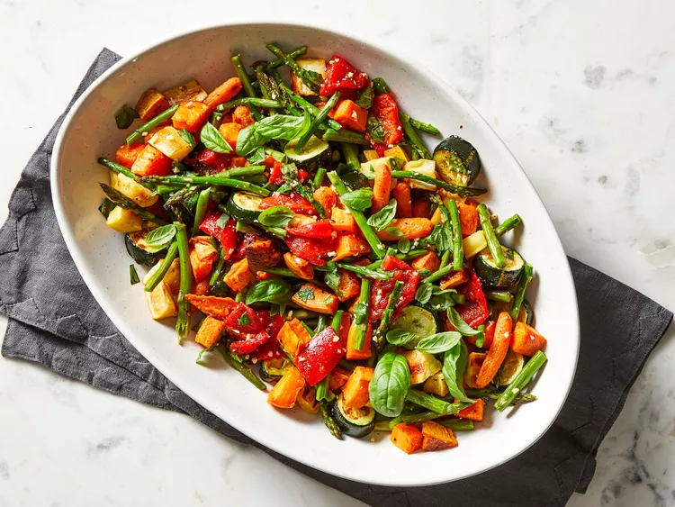

Roasted Vegetable Medley

Vital Veggies Make The Viking
Just becuase the farm work can pile up, that's no excuse for skimping on the vegetables! This Medley will surley keep you
fit for duels and save time.
The Ingredients
- 2 tblspoon olive oil, separated
- 1 large yam, peeled and cut in 1 inch pieces
- 1 large parsnip, cut like the yam
- 1 cup baby carrots
- 1 zuchinni, cut into 1 inch pieces
- A single bunch of asperagus, 1-inch pieces
- 1/2 cup red peppers, 1-inch
- 1/4 cup chopped fresh basil
- 2 cloves garlic, minced
- 1/4 teaspoon: kosher salt + ground black pepper
To Cook